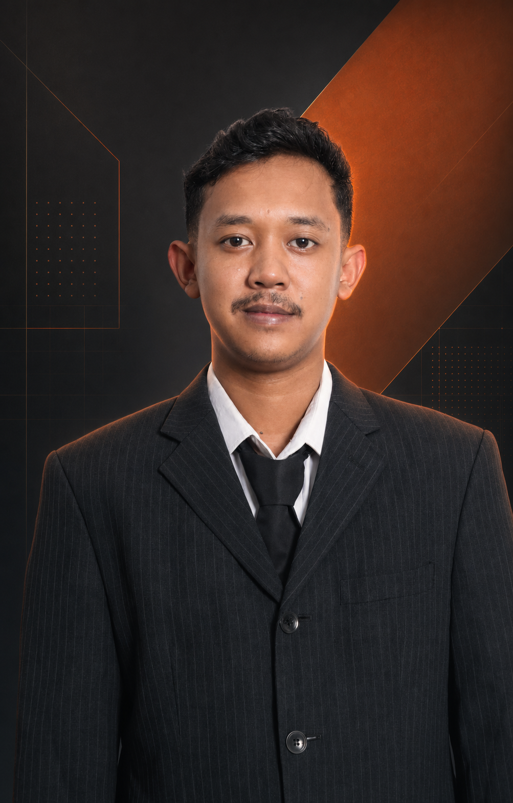

01
Internet of Things
Merancang sistem IoT end-to-end untuk monitoring, otomasi, dan pertukaran data perangkat secara real-time.
- Arduino & ESP8266/ESP32
- Sensor & aktuator
- MQTT & integrasi API
Halo, saya Bayu Aditya Sihombing 👋
Technology enthusiast dengan fokus pada IoT, IT Support, Web Development, dan Software Engineering untuk menghadirkan solusi digital yang andal.

Berfokus pada solusi IoT, dukungan IT, jaringan, serta pengembangan web dan software yang terstruktur.
Saya percaya solusi teknologi terbaik lahir dari pemahaman masalah, eksekusi yang terstruktur, dan perhatian pada pengalaman pengguna.
Berbasis di Indonesia, saya terbiasa bekerja dengan perangkat IoT, menangani kendala teknis, serta membangun aplikasi web dan software yang efisien. Saya mengutamakan sistem yang stabil, dokumentasi yang jelas, dan hasil yang mudah dikembangkan.
Kenal lebih dekat ↗Saya menggabungkan pemahaman hardware, infrastruktur IT, dan software untuk membangun solusi yang stabil, aman, dan mudah digunakan.
Merancang sistem IoT end-to-end untuk monitoring, otomasi, dan pertukaran data perangkat secara real-time.
Menjaga operasional perangkat dan jaringan tetap optimal melalui diagnosis yang sistematis dan dukungan yang responsif.
Membangun website modern yang cepat, responsif, aksesibel, dan konsisten di berbagai ukuran perangkat.
Mengembangkan software terstruktur dan mudah dipelihara dengan pendekatan problem-solving dan praktik engineering yang baik.
Project yang menggabungkan perangkat keras, sensor, dan jaringan untuk menghasilkan solusi yang fungsional.
Sistem tempat sampah otomatis yang mendeteksi objek dan kapasitas sampah secara real-time, lalu memberikan notifikasi ketika tempat sampah hampir penuh.
Perancangan simulasi jaringan kantor dengan pembagian perangkat yang terstruktur, konfigurasi IP, dan pengujian konektivitas antar-client.